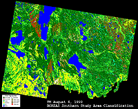
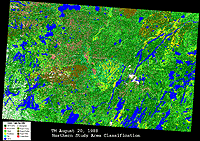

P.I.(s): Forrest G. Hall, Piers J. Sellers -- NASA/Goddard Space Flight Center
Objectives: To use long-term satellite remote sensing to characterize the successional and disturbance dynamics at a regional scale and to associate, via the use of carbon flux models, these dynamics with carbon flux.
 Landsat MSS and TM, SPOT and AVHRR data will be acquired for the BOREAS region, including the Southern and Northern Study Area and the intervening transect for the period of record of each satellite (Landsat back to 1972). Key successional stages will be identified using pattern recognition and image analysis. The rates of changes between successional stages will then be quantified using change analyses. These results will be combined with ecophysiological models that relate carbon flux to the successional state and climate history to estimate regional carbon flux.
Landsat MSS and TM, SPOT and AVHRR data will be acquired for the BOREAS region, including the Southern and Northern Study Area and the intervening transect for the period of record of each satellite (Landsat back to 1972). Key successional stages will be identified using pattern recognition and image analysis. The rates of changes between successional stages will then be quantified using change analyses. These results will be combined with ecophysiological models that relate carbon flux to the successional state and climate history to estimate regional carbon flux.
|  Land Cover Classifcation image of the SSA (Aug 6, 1990) |  Land Cover Classifcation image of the NSA (July 25, 1990) |
| These Classification images are sub-sampled multi-band composite versions of the large images available on the BOREAS FTP site. | |
Data Sets
TE Overview || TE-1 | TE-2 | TE-4 | TE-5 | TE-6 | TE-7 | TE-8 | TE-9 | TE-10 | TE-11 | TE-12
TE-13 | TE-14 | TE-15 | TE-16 | TE-17 | TE-18 | TE-19 | TE-20 | TE-21 | TE-22 | TE-23
 Send a data request to the BOREAS Data Manager (BOREAS Investigators only)
Send a data request to the BOREAS Data Manager (BOREAS Investigators only)
E-Mail a comment on this page to the curator 
Send e-mail to Shelaine Curd, the BORIS representative for the TE group
Return to the TE Overview
Return to the BOREAS Science Groups Overview
Return to the BOREAS Home Page
Last Updated: October 29, 1997
{kind=link}
{kind=link}